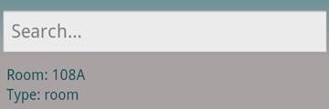

How To Use?
-
1. Select your starting position. You can do that by either scanning a Barcode near you or manually searching for your position.
- To scan a barcode, just press the scan button
- To enter manually, press the list button
- Enter your desired ending location by pressing the list button
- select the Floor
- Select the Room
- you can search for the room by entering the room in the search field
- you may press the microphone on your keyboard to search by saying the room number*

- Press the Go button to start your route
- Hold the phone in the orientation that the map appears in, horizontal or vertical.
- Start your route
- Press the next button when you arrive to your next point
- The picture in the top center tells which direction to take next
- You can go to a previous point by pressing the previous button

Additional Features
- If you get lost, you can shake the phone or select Menu then Lost? and enter your current location and it will recalculate.
- In the main screen you could press the menu key then settings and edit your prefrences
- In the main screen you could press the menu key then the help button to call someone from MGH
*might not work with all phones